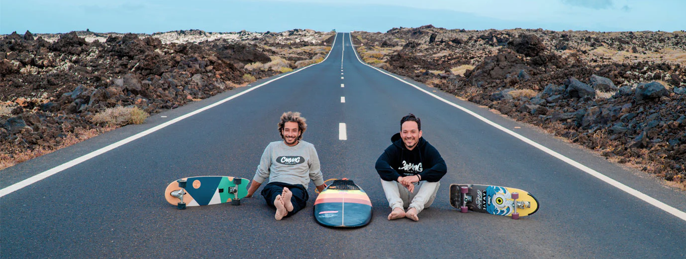

Carving Social Club nace en Madrid en 2011, a raíz de la pasión por el deslizamiento de dos amigos. Uno de los tantos dias patinando por la ciudad, probaron un Carveboard de la marca Carve USA y desde ese día supieron que sus vidas habían cambiado. Se hicieron con un par de estas tablas y patinaban por la ciudad como si la estuvieran surfeando. Veían olas por todas partes aunque la playa estuviese lejos, y sabían que habían encontrado una herramienta perfecta para evolucionar en el Surf, un Surfskate.
powered by

the punk of surf
enjoy the ride
En el Carving Social Club, además hemos creado la Primera Escuela Multimarca de Surfskate de España. A día de hoy ofrecemos clases de Iniciación al Surfskate, Perfeccionamiento de técnica de Surf, y en Skateparks o bowls, con todas las marcas que trabajamos. Nuestros más de 25 años de experiencia en el mundo del Surf y el Skate, nos han permitido desarrollar nuestro propio método de enseñanza.
